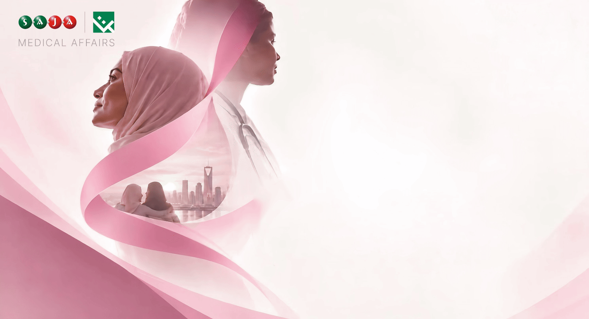
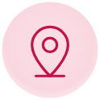

 |
| | | |
| |  | زملاءنا الأعزاء، |
|
As part of Breast Cancer Awareness Month, the SAJA Medical Affairs team is pleased to invite you to a breast cancer awareness lecture presented by Dr. Doaa Khayat, Consultant Oncologist. | | ضمن فعاليات شهر التوعية بسرطان الثدي، يسعد فريق الشؤون الطبية في ساجا دعوتكم لحضور محاضرة توعوية بسرطان الثدي تقدّمها الدكتورة دعاء خياط، استشارية الأورام. |
It is a chance to hear from a specialist, ask your questions, and learn how awareness and early detection can support every journey. | | فرصة للاستماع إلى مختصة، وطرح أسئلتكم، والتعرّف على دور الوعي والاكتشاف المبكر في دعم كل رحلة. |
Knowledge supports the journey—we look forward to having you with us. | | المعرفة تدعم الرحلة… ونتطلع لحضوركم ومشاركتكم. |
 | You’re Invited — Save the Date |
| |  | يسعدنا حضوركم — احفظوا الموعد |
|
| |
| Speaker | المتحدثة Dr. Doaa Khayat
Consultant Oncologist د. دعاء خياط – استشارية أورام |
| | Date | التاريخ Wednesday, 14 October 2026 الأربعاء 14 أكتوبر 2026 |
| | Time | الوقت 12:00 PM – 1:00 PM من 12 ظهرًا إلى 1 ظهرًا |
|  | Venue | المكان SAJA Office – Jeddah مكتب SAJA – جدة |
|
|
| |
|
 | معًا نحو مستقبل أفضل لمرضى سرطان الثدي Together towards a brighter future for breast cancer patients |  |
|